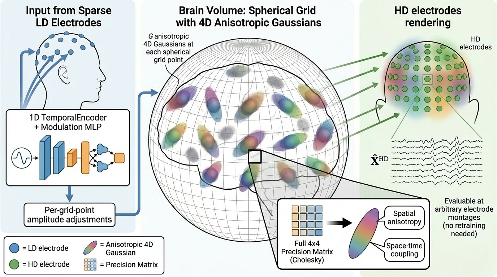
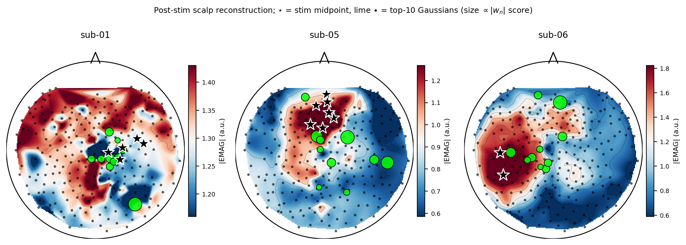
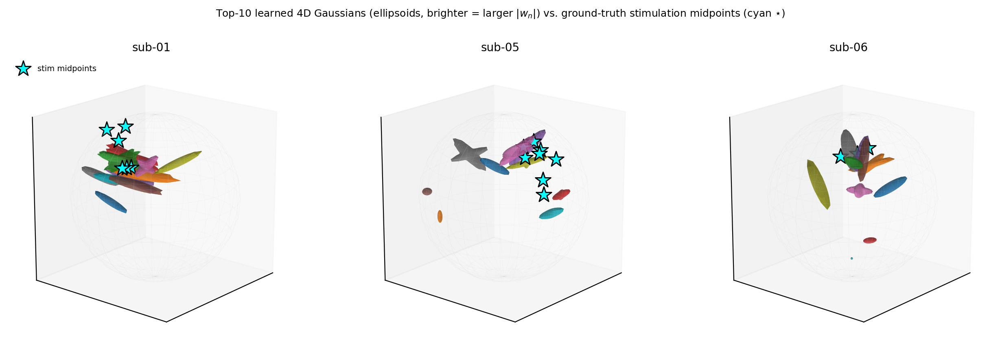
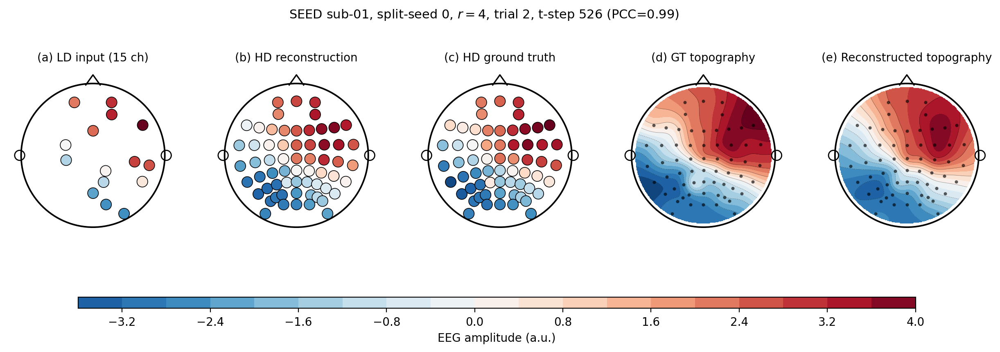
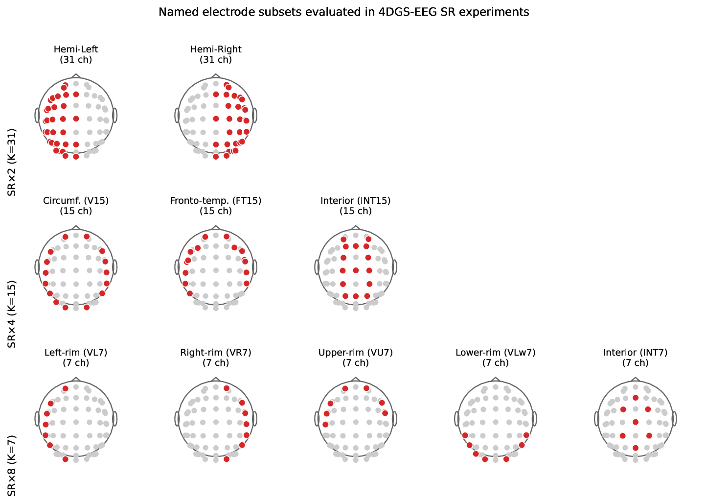
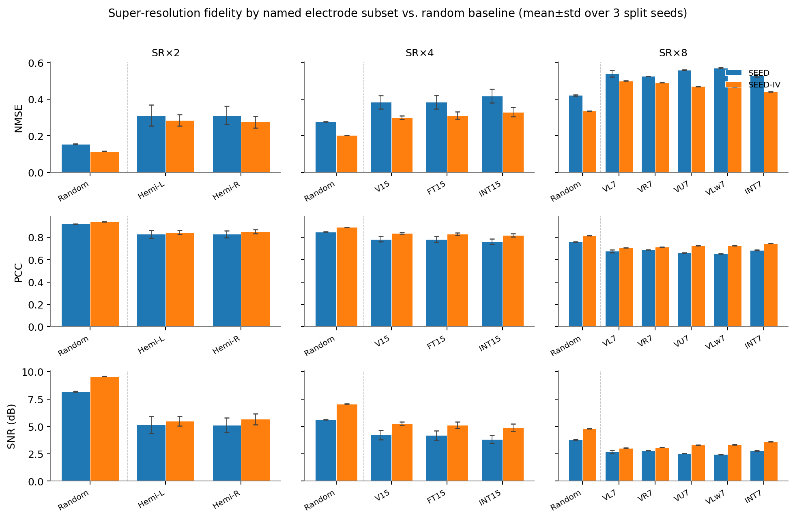
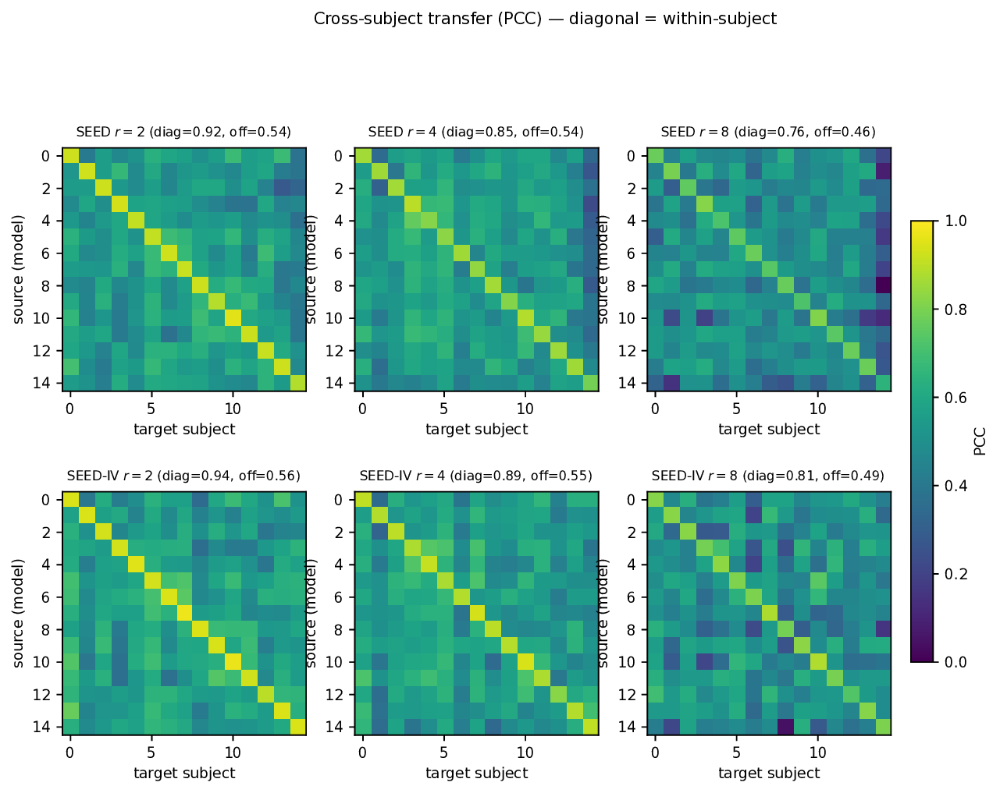

Camera-ready reference implementation of EMAG, a spatio-temporal mixture-of-4D-Gaussians model for EEG super-resolution (low-density → high-density electrode arrays).

At each brain grid location the source field is represented by G 4D Gaussians (3 space + 1 time) with a learnable full 4D precision (Cholesky-parameterized). A fixed or learned forward operator projects the latent field to the electrode space.
Source validation
Most EEG models can only be evaluated at the scalp — the underlying neural sources are unknown. The Localize-MI dataset solves this: epileptic patients implanted with stereo-EEG (sEEG) depth electrodes received single-pulse intracerebral electrical stimulation (SPES) at known cortical sites, while a 256-channel scalp HD-EEG cap recorded the evoked response. The stimulating contact gives a millimetre-accurate ground-truth dipole — a rare opportunity to check whether a learned source-space model places its sources where the brain actually generated them.
We feed EMAG the low-density scalp signal and recover the implied cortical activity. The figures below show, at the time of the stimulation peak:
- 2D topomap — scalp projection of the ground-truth HD recording vs. EMAG's reconstruction from the LD montage. Spatial topography is preserved, including the polarity inversion above the stimulation site.
- 3D volumetric — EMAG's learned 4D Gaussians overlaid on the cortical mesh, with the true stimulating contact marked. The most active mixtures cluster around the contact, not at the scalp maximum, recovering the source-vs.-sensor distinction that linear interpolators cannot.


Reconstruction quality
Across Localize-MI (high-SNR evoked) and SEED / SEED-IV (resting/affective EEG), EMAG outperforms spline, neural-network and diffusion baselines on RMSE, SNR and structural-similarity metrics. The example below shows ground-truth, baseline and EMAG topographies at a single sample: EMAG preserves both local extrema and the global spatial gradient that linear interpolators smear out.

Electrode-subset super-resolution
A practical question: which low-density montage best supports SR to a full HD cap? We benchmark EMAG on a family of named subsets (10-20, frontal-only, occipital-only, sparse-grid, …) at matched cardinality. Frontal-heavy and uniformly-spread subsets are strongly favoured; clustered occipital-only subsets degrade reconstruction even when the held-out HD targets are away from the cluster.


Cross-subject generalization
Beyond the per-subject regime, we fit EMAG on N−1 subjects and evaluate on the held-out one. The heatmaps show pairwise train-subject / test-subject reconstruction fidelity: diagonal-light, off-diagonal-dark patterns indicate that learned 4D Gaussian fields are largely subject-specific, while broader off-diagonal mass marks transferable structure within a dataset.

Interactive viewer
A live, in-browser viewer of the learned 4D Gaussians: pick a dataset / subject / SR factor, scrub through time or hit play to watch the spatio-temporal Gaussians activate.
Repo layout
EMAG/
├── src/
│ ├── models/{base.py, model.py}
│ ├── data/{eeg_constellations, channel_subsets, ld_interpolation,
│ │ leadfield_io, localize_mi/seed/seed_iv dataloaders}
│ ├── training/train.py # single-subject SR training entry point
│ └── eval/visualize_subject.py
├── scripts/build_site_data.py # pre-render a ckpt → JSON for the viewer
├── site/ # this site (GitHub Pages source)
├── assets/ # figures shown above
├── configs/environment.yml
└── README.mdInstall
conda env create -f configs/environment.yml
conda activate emagTrain
Single-subject SR run (Localize-MI, SR factor 4):
PYTHONPATH=src python src/training/train.py \
--dataset localize_mi --subject sub-01 --sr_factor 4 --epochs 100 \
--data_root /path/to/Localize-MI/derivatives/epochs \
--results_dir ./results --checkpoint_dir ./checkpointsSEED / SEED-IV:
PYTHONPATH=src python src/training/train.py --dataset seed --subject 1 --sr_factor 4 \
--data_root /path/to/SEED --results_dir ./results --checkpoint_dir ./checkpoints
PYTHONPATH=src python src/training/train.py --dataset seed_iv --subject 1 --sr_factor 4 \
--data_root /path/to/SEED-IV --results_dir ./results --checkpoint_dir ./checkpointsUseful flags: --n_gaussians_per_point, --grid_type {cube,sphere}, --n_grid, --ld_conditioning {none,global,per_grid}, --forward_operator {free,leadfield_matrix}. See train.py --help for the full list.
Inference / Visualization
PYTHONPATH=src python src/eval/visualize_subject.py \
--checkpoint checkpoints/<run_name>/<subject>.pt \
--dataset localize_mi --subject sub-01 \
--data_root /path/to/Localize-MI/derivatives/epochs \
--time_idx 1234 --out viz.pngCitation
@article{lazarovich2026emag,
title={EMAG: Differentiable 4D Gaussian Mixture Splatting for EEG Spatial Super-Resolution},
author={Lazarovich, Alex and Shahar, Ofir Itzhak and Elkin, Gur and Ben-Shahar, Ohad},
journal={arXiv preprint arXiv:2605.29731},
year={2026}
}